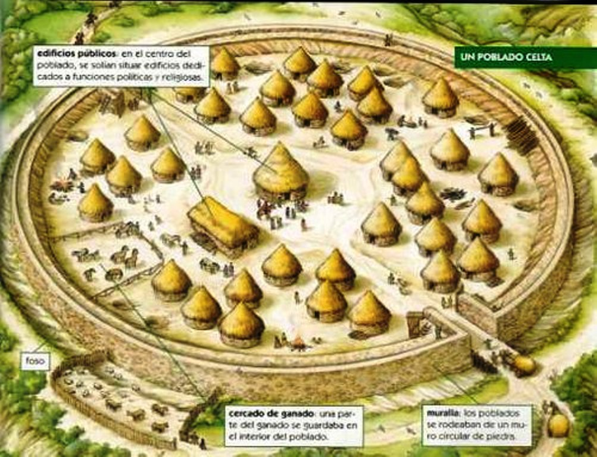
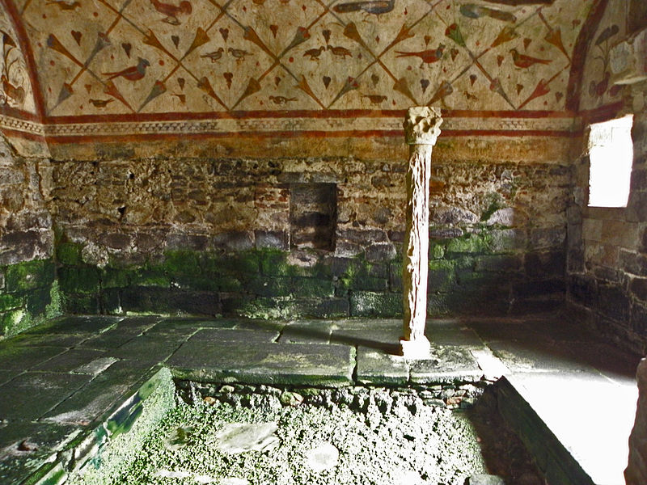
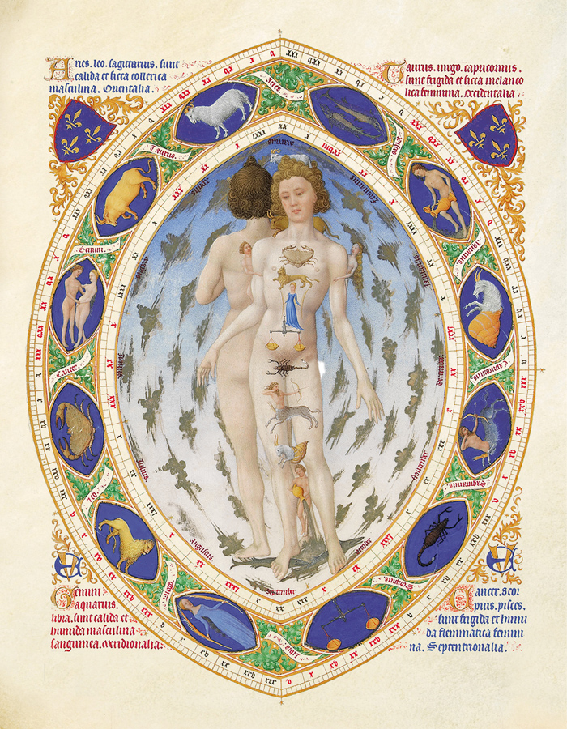

La denominación deriva del topónimo Gallaecia. Con este nombre los romanos identificaban a la provincia del Imperio romano que estaba situada al norte del río Duero y al oeste del río Pisuerga.
Aunque en esta extensa área territorial convivían grupos humanos asentados desde el Neolítico, el nombre procede de los celtas, un grupo de indoeuropeos que se asentaron en la península durante el periodo calcolítico (entre el 2300 y el 1800 a. C.) y posteriormente a partir del siglo IV a. C.
Los celtas aparecen por primera vez en los textos del historiador griego Hecateo de Mileto que en el año 517 a. C. se refiere a ellos con el nombre de κέλτης kéltis (‘ocultos’).
Sin embargo el término celtae era muy genérico para identificar la gran variedad de asentamientos celtas en Europa, por lo que pronto comenzaron a ser clasificados en función de sus lenguas o de las deidades que veneraban. De esta forma en las islas Británicas se podían encontrar celtas goidélicos y en la península Ibérica serían conocidos como καλλαικoι (kallaikoi), tal como relata Estrabón en el siglo I a. C.
El término kallaikoi acabó identificando a todos los del noroeste peninsular. El motivo debe encontrarse en su ubicación, una privilegiada zona de paso fluvial y marítimo que favoreció la preeminencia de la población cuyos habitantes serían llamados caleci o gallaeci por Plinio el Viejo. Esto derivaría después en los etónimos Calecia o Gallaecia (Galicia).
En cuanto a la etimología, la teoría más consolidada indica que Galicia procede de la raíz indoeuropea kala (‘refugio, abrigo’), que pasó a las lenguas gaélicas como gall (madre, tierra). Esta teoría es además coherente con las que vinculan el étimo a la Diosa Madre de los celtas, Cale, de cuyo análisis se identifican los significados de ‘piedra’, ‘roca’ o ‘duro’ en coherencia con la orografía granítica sobre la que se asentaban estos clanes.
Prehistoria: Gallaecia
Siguiendo la periodización cronológica al uso, se aborda este extenso período histórico comenzando por las primeras manifestaciones culturales del Neolítico en la región (Oestriminios). En esta época se define la iconografía identitaria galaica que después eclosionará con la llegada de los celtas (Kallaicoi) durante la Edad de Bronce y el Calcolítico. Finalmente, se aborda la romanización desde los primeros enfrentamientos bélicos hasta la conformación de la jerarquía eclesiástica priscilianista a finales del siglo IV.
Oestrimnios
Los primeros antecedentes se registran a partir del Neolítico. Tras la aparición del género Homo en África durante el Pleistoceno, tendrá lugar la transición entre las especies Australopitecus y Sapiens a lo largo de todo el Paleolítico. El Homo Sapiens protagoniza en solitario el cambio progresivo de una organización social nómada a otra basada en la agricultura. Este cambio favorece la creación de asentamientos más estables y con ellos la emergencia de nuevas formas culturales.
Una de ellas es el megalitismo, que en Europa se desarrolla desde el Neolítico hasta la Edad de Bronce caracterizándose por la presencia de (megalitos), construcciones realizadas con piedras de grandes dimensiones.En Galicia y norte de Portugal se origina el megalitismo atlántico al extenderse por toda la fachada atlántica. La cultura del “megalitismo atlántico” vive su apogeo peninsular entre el 3000 a. C. y el 2300 a. C.
Los megalitos que más abundan son los sepulcros funerarios, construcciones formadas generalmente por un túmulo en torno a un dolmen interior con o sin corredor de entrada, en el que se depositaban los cadáveres y un ajuar funerario. Estos dólmenes se encuentran frecuentemente agrupados en necrópolis situadas en llanuras.
El gran número de dólmenes inducen la existencia de una población densa y dispersa que, según los análisis arqueológicos, hacía uso de una ganadería primitiva y una agricultura de cereales y leguminosas poco sofisticada. La sociedad megalítica galaica no desarrolló una jerarquización social significativa, se trataba en cambio de una “sociedad igualitaria, compuesta de pequeñas comunidades, poco belicosa y asentada de forma dispersa” en el territorio. Su características más destacables serían su sorprendente habilidad arquitectónica y sobre todo su capacidad de abstracción y trascendencia manifestada en los grabados encontrados en ellos que describen una “mitología centrada en la fecundidad y en la muerte”, emergiendo la figura del oficiante o mediador entre los dioses y los seres humanos.
Las tecnologías megalíticas comienzan a desaparecer con la llegada de las técnicas metalúrgicas. Sin embargo la identidad cultural fraguada en el período megalítico no desaparecerá, sino que continuará transmitiéndose en el tránsito del tercer al primer milenio a. C., como demuestra la existencia de los petroglifos, litografías realizadas en piedra granítica al aire libre, de temática naturalista, generalmente zoomorfa y antropomorfa junto con elementos como armas, escudos e ídolos-cilindro. La litografía prehistórica galaica sediferencia de sus equivalentes europeos por los motivos abstractos,en especial laberintos, tramas geométricas y trisqueles, que se consolidarán en la cultura castreña.
Kallaikoi
Con el fin de la cultura megalítica, el Calcolítico, comienzan las primeras poblaciones indoeuropeas precélticas. El profesor (historiador, arqueólogo y escritor) Florentino López Cuevillas, en su obra La civilización céltica en Galicia, después de exponer un estudio exhaustivo sobre el aspecto político y geográfico, asegura que todas estas tribus en su mayor parte no eran celtas. La relación de tribus pre-célticas que se puede dar es bastante extensa:

Recreación de un poblado celta
oestrimnios
albiones
seurros
tiburos
bibalos
caporos
Los celtas se acomodaron bastante bien, pero su influencia fue tardía y esporádica. La población autóctona más antigua conservó su destacada personalidad lingüística y cultural y también supo intercambiar aspectos culturales con la civilización céltica. Hubo un verdadero trueque de costumbres y de conocimientos.
En esta época se produce un rápido incremento poblacional debido a los desplazamientos desde la meseta buscando el clima atlántico que propiciaba la abundancia de metales nobles, las piezas de ornamento y joyería.
Esta cultura, junto con los elementos que sobreviven de la cultura megalítica atlántica y las aportaciones que proceden de las culturas mediterráneas, acaban derivando en lo que se ha denominado la Cultura Castreña.
En cuanto a la organización social de los celtas galaicos, las primeras referencias documentales que se encuentran sobre la sociedad castreña son las que proporcionan los cronistas de las campañas militares romanas como Estrabón, Heródoto o Plinio el Viejo entre otros. Estos describen a los habitantes de estos territorios como un conjunto de bárbaros que pasan el día peleando y la noche comiendo, bebiendo y danzando bajo la luna.
De las crónicas romanas así como de la interpretación de los abundantísimos restos arqueológicos por toda la actual Galicia y norte de Portugal, es posible inferir que se trataba de una sociedad matriarcal, con una aristocracia militar y religiosa probablemente de tipo feudal. Las figuras de máxima autoridad eran el caudillo, de tipo militar y con autoridad en su castro o clan, y el druida, principal referentes médico y religioso que podía ser común a varios castros. La cosmogonía celta se mantenía homogénea debido a la facultad de los druidas de reunirse en concilios con los druidas de otras áreas, lo que aseguraba la transmisión de los conocimientos y los eventos más significativos.
La distribución territorial castreña divide su área de influencia en espacios en torno al castro equivalentes a las actuales comarcas. La ocupación del territorio basándose en fortificaciones es coherente con la presión poblacional y la presencia de minerales, entre ellos el oro.
Edad Antigua
Romanización
La cohesión social y territorial de la cultura castreña explica la extraordinaria resistencia de los galaicos a la dominación romana que se prolongó durante más de un siglo cuando esta ya se extendía por el resto de la Hispania. Así lo constatan diversas crónicas como las de Orosio, que cuenta como en el año 137 a. C., el praetor Décimo Junio Bruto inició una campaña de castigo debido a las continuas incursiones bélicas de los celtas galaicos en apoyo de los lusitanos. Por esta campaña, en la que hubo de enfrentarse con 60.000 gallaicoi en el río Duero, volvió a Roma convertido en héroe, por lo que fue llamado Gallaicus. En ese mismo año las legiones romanas llegarían al río Limia, que al identificar en él al río Lethes de la mitología romana solo pudo ser cruzado cuando el Praetor lo cruzó llamando por sus nombres a sus soldados para demostrar que no había perdido la memoria. El avance hacia el norte se detendría en al año siguiente al llegar al río Miño donde los gallaicoi provocaron el repliegue romano hacia el sur.

Santuario tardorromano en Lugo
La situación se mantendría durante los siguientes cien años, sin que las esporádicas expediciones romanas consiguieran internarse más en territorio galaico, siendo la única significativa las de P. Craso del 96 a. C. al 94 a. C. La situación seguiría así hasta que diez años después Julio César es designado Propraetor de la Hispania Ulterior que en el año 61 a. C. retoma el avance hacia el norte con una incursión marítima desembarcando en Brigantium, en la parte de la costa que hoy ocupa la ciudad de La Coruña, en el que se cree era el centro de la vía del estaño. Sin embargo el interior del territorio galaico continúa una resistencia que se recrudece en su última etapa durante la campaña de César Augusto entre los años 39 a. C. al 24 a. C., de la que sería su exponente más significativo la batalla del monte Medulio.
Una vez finalizados los enfrentamientos bélicos, se inició el proceso de romanización que se prolongaría durante los siguientes cuatro siglos, iniciándose oficialmente entre los años 64 y 70, cuando Vespasiano convierte en pueblo romano a los 451.000 gallaicoi (según Plinio el Viejo). De esta forma los castros se transformarían en las víllae y la población incorporara las nuevas tecnologías como la arquitectura, la agricultura basada en el arado, el derecho romano o la minería.
Una importante aportación sería la infraestructura viaria compuesta de puentes y calzadas utilizada para los desplazamientos de tropas y el transporte de mercancías. A lo largo de estas vías había mansiones y estaciones de descanso para las tropas, que fueron el origen de numerosas villas que han llegado hasta nuestros días. Las principales eran tres — numeradas como “XVII a XX” — y enlazaban las ciudades fundadas por Augusto. Estas tres ciudades, Lucus Augusti (Lugo),Bracara Augusta (Braga) y Asturica Augusta (Astorga) que con la reforma de Diocleciano del año 298 quedarían unificados bajo una única provincia segregada de la Tarraconensis: Gallaecia.
La provincia romana de Gallaecia, extensa que la Galicia actual, comprendía: el norte de Portugal, donde estaba su capital, Braga, así como Asturias, Cantabria y parte de lo que posteriormente serían los reinos de León y Castilla. La romanización de la cultura galaica se produjo también en la lengua y la religión, aunque en la lengua el sustrato galaico original acabaría disolviéndose en el latín manteniéndose en las raíces de topónimos y antropónimos, en el caso de la religión el fenómeno fue el contrario.
Campamento romano, Aquis Querquennis, en Ourense
Campamentos romanos en Galicia
Emplazamiento
Hectáreas
Tipo
Lancara
29,84
Campamento militar
Pol
13,55
Campamento militar
Negreira
13,28
Campamento militar
A Fonsagrada
10,28
Campamento militar
Petín
8,7
Campamento militar
Manzaneda
2,34
Campamento militar
Bande
2,63
Fuerte permanente
A Cidadela
2,63
Fuerte permanente
Verín
0,44
Otros
Priscilianismo

«Prisciliano enseñó que los signos del Zodíaco se corresponden con partes del cuerpo»
Durante los siglos IV y V la Iglesia Católica eleva al cristianismo del rango de religión perseguida a religión oficial del Bajo Imperio. Esta nueva situación desata importantes luchas de poder en su seno, así como un notable grado de acomodación por parte de la jerarquía eclesiásticaque cada vez va asumiendo más el poder político político. En ese contexto social convulso y de vida político-religiosa cambiante surge en el noroeste peninsular un movimiento religioso que entronca con la corriente ascética antes mencionada: poniéndose a una Iglesia cada vez más acomodada y a una jerarquía tan opulenta como cada vez más elitista. en el año 379 dC comienza a predicar en la Gallaecia un personaje de gran carisma y atractivo popular llamado Prisciliano. De familia noble, es descrito por sus principales biógrafos como erudito y muy aventajado en la discusión.
En torno al año 379 vuelve a Gallaecia y comienza un período predicante durante el que propugna y practica un cristianismo ascético (que incluye desde el vegetarianismo al celibato), incorporando a la liturgia elementos populares como el baile, o la celebración de eucaristías al aire libre. Propone la incorporación de colectivos tradicionalmente apartados de las sesiones de lectura de los textos bíblicos, como las mujeres o los esclavos, y admite la posibilidad de lectura e interpretación personal de textos apócrifos.La propagación de las ideas de Prisciliano se produce con rapidez, y en todos los estratos sociales, extendiéndose en pocos tiempo hasta a la Aquitania.
El obispo de Ithacio (quién da nombre al movimiento antipriscilianista conocido como “ithaciano”), provoca primero la convocatoria del Concilio de Caesaraugusta en el 380 y 82 (actual Zaragoza) promulgando un edicto desterrando a los priscilianistas de sus sedes. En ese año decide partir hacia Roma para contrarrestar la ofensiva de Ithacio donde consigue la derogación del rescripto imperial (según sus detractores, mediante soborno). A su retorno los priscilianistas recuperan sus iglesias e Ithacio resulta desterrado, decantándose la situación en la península a favor del movimiento reformador durante el siguiente año.
Pero tras un sínodo en Burdeos, de nuevo con el fin de condenar el priscilianismo, se instaura un proceso civil contra los principales cabecillas del movimiento religioso, bajo la acusación de brujería. Las causas de esta imputación se pueden atribuir a las consecuencias derivadas de la aplicación de la ley romana: confiscar las propiedades eclesiásticas de los reos, como templos, el embargo de las propiedades particulares de los acusados (muchos de ellos de familias pudientes) lo que resultaba mucho más lucrativo. Así las cosas, en el año 385 se ejecuta la sentencia, tras confesión por tortura de los líderes, siendo decapitados el propio Prisciliano y varios discípulos convirtiéndose así en los primeros ajusticiados por la Iglesia a través de una institución civil.Ese es el fin de Prisciliano, pero no del priscilianismo.
La condena y ejecución de los priscilianistas originó las protestas del propio obispo de Roma, Siricio, o Martín Turonense, quien se dirigió a la corte logrando la revocación del prescripto. Esto haría posible que en 393 un grupo de galaicos llegara a Tréveris para exhumar solemnemente sus restos. Basándose en el viaje realizado por sus discípulos con el cuerpo de los decapitados en Tréveris de vuelta a la Gallaecia diversos autores han planteado la posibilidad de que en la Catedral de Santiago de Compostela esté enterrado el hereje galaico, y no el apóstol bíblico.